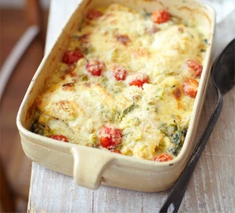

Haddock gratin
Description
A cheesy, rich, fish dish

Ingredients
- Smoked Haddock
- Cherry Tomatoes
- Spinach
- Creme fraiche
- Spring Onions
- Breadcrumbs
- Cheddar
Steps
- Wilt spinach, then use to line baking dish.
- Lay on top haddock and tuck in cherry tomatoes.
- Dod on creme fraiche and grate over cheddar.
- Bake in oven until golden and bubbling.